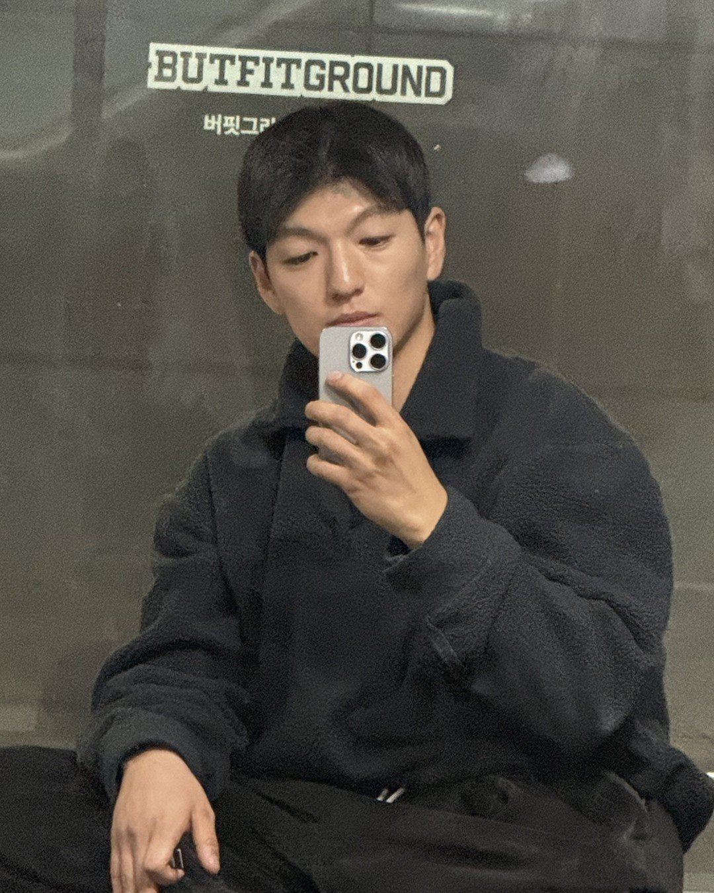
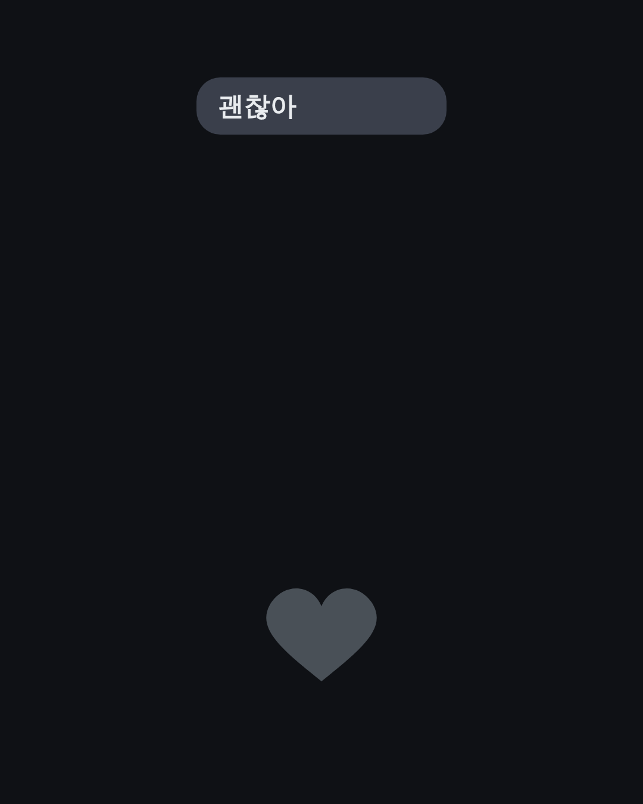
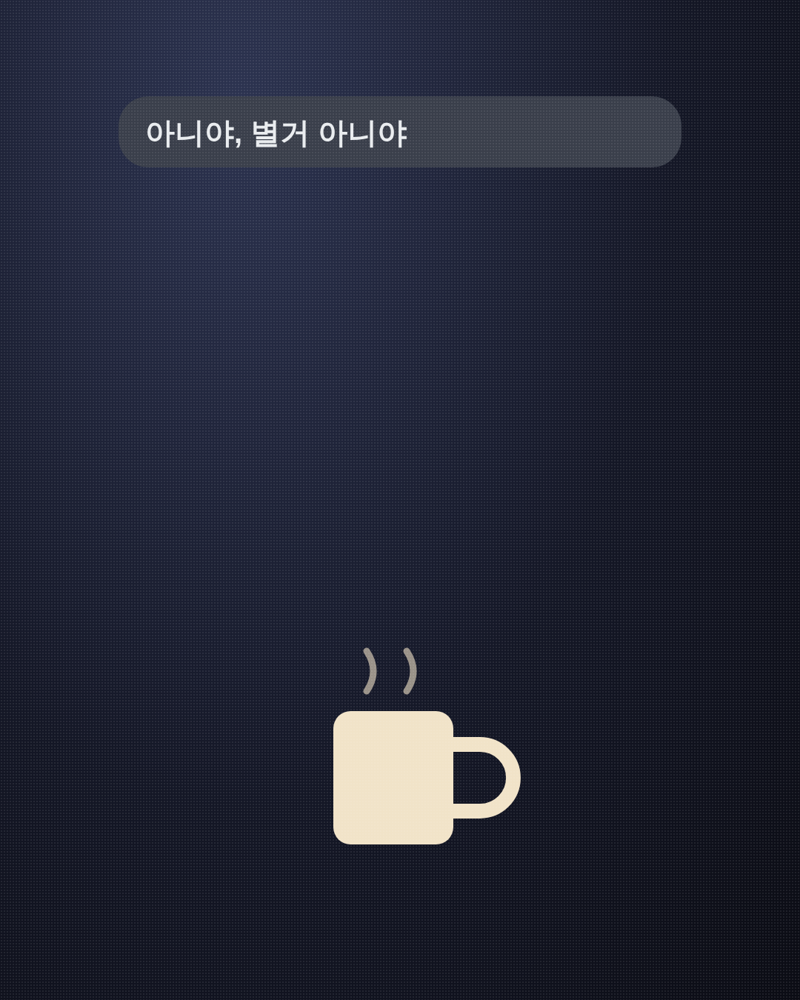
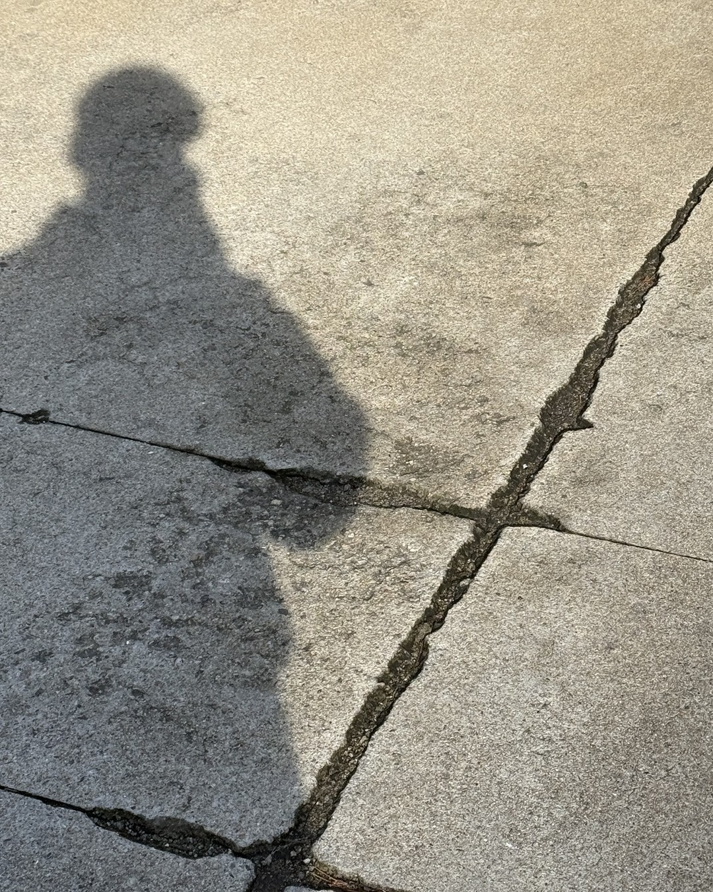
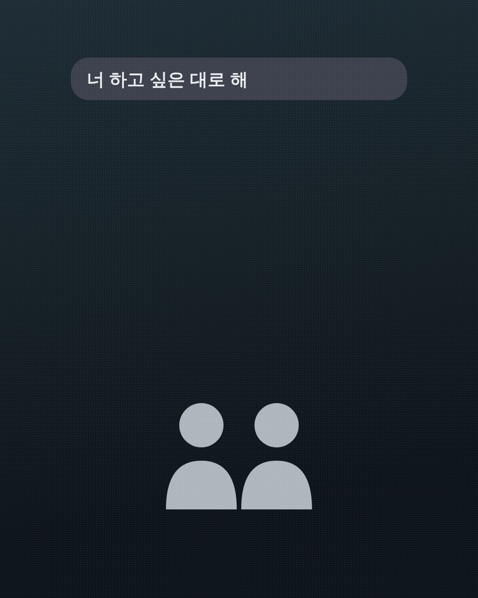
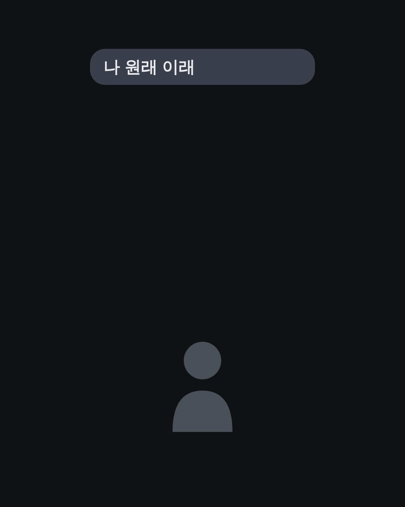
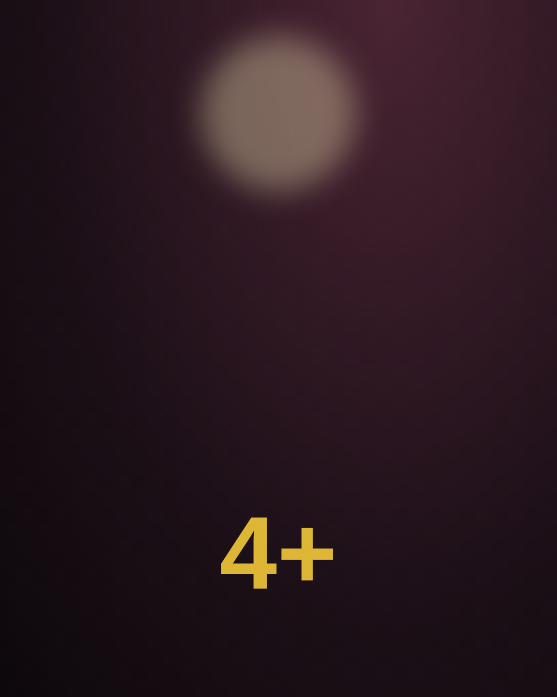
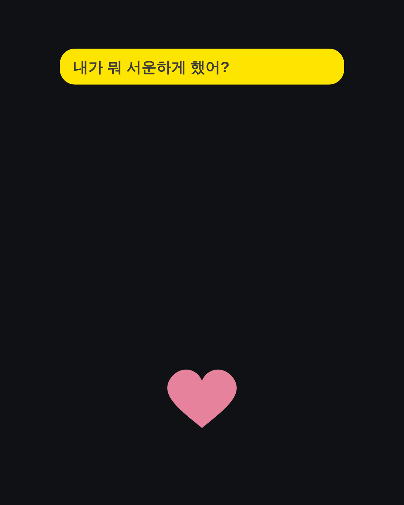
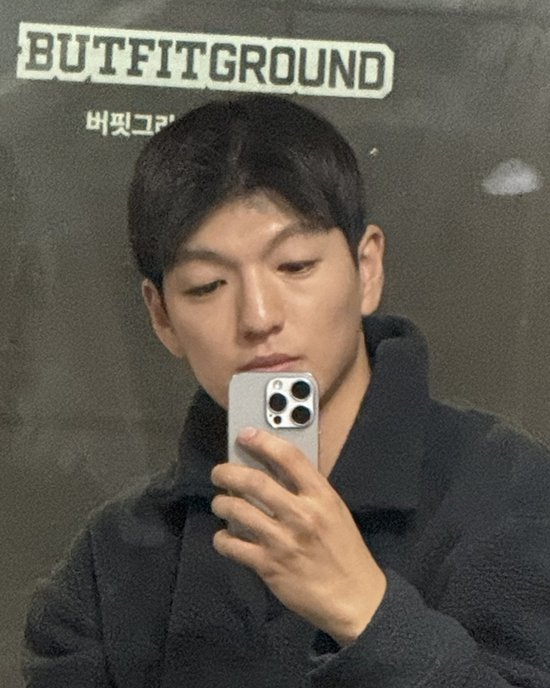

남자가 서운할 때
하는 말, 진짜 뜻
("괜찮아"는 정말 괜찮은 걸까요?)
1/14
@mszexc
넘겨보세요 →

남자는 서운하면
"서운해" 대신 이런 말을 해요.
(들어본 말을 세어보세요.)
2/14
@mszexc
남자들끼리 하는 말 #64
첫 번째.
"괜찮아."
(안 괜찮아요. 말하면 쪼잔해 보일까 봐 접는 거예요.)
3/14
@mszexc
남자들끼리 하는 말 #64

두 번째.
"아니야, 별거 아니야."
(별거예요. 싸움이 될까 봐 덮는 거예요.)
4/14
@mszexc
남자들끼리 하는 말 #64

세 번째.
"응, 알았어."
(서운해서 말이 줄어든 거예요.)
5/14
@mszexc
남자들끼리 하는 말 #64

네 번째.
"너 하고 싶은 대로 해."
(내 의견은 어차피 안 들어갈 것 같다는 뜻이에요.)
6/14
@mszexc
남자들끼리 하는 말 #64
다섯 번째.
"요즘 좀 바빠."
(서운한 마음을 정리할 시간이 필요해요.)
7/14
@mszexc
남자들끼리 하는 말 #64

여섯 번째.
"나 원래 이래."
(지적받은 게 서운해서 방어하는 거예요.)
8/14
@mszexc
남자들끼리 하는 말 #64
남자는 서운하면 "괜찮아"로 덮어요.
괜찮은 게 아니라, 말하는 법을 모르는 거예요.
9/14
@mszexc
남자들끼리 하는 말 #64

몇 개 들어봤나요?
4개 이상이면, 혼자 삭히는 남자예요.
(쌓이면 한 번에 멀어져요.)
10/14
@mszexc
남자들끼리 하는 말 #64
그래서 묻는 말이 중요해요.
"내가 뭐 서운하게 했어?"
("왜 그래?"는 따지는 말로 들려요.)
11/14
@mszexc
남자들끼리 하는 말 #64

"괜찮아"를 들었을 땐
"괜찮다는 말 말고, 진짜 기분 하나만."
(작은 서운함부터 꺼내게 해 주세요.)
12/14
@mszexc
남자들끼리 하는 말 #64
남자친구에게는 이렇게.
"서운한 거, 작은 거라도 말해줘. 나 그거 쪼잔하다고 생각 안 해."
13/14
@mszexc
남자들끼리 하는 말 #64

이것만 기억하세요.
남자의 "괜찮아"는, 말 못 한 서운함이에요.
남자가 하는 말의 뜻은 전자책 1·2권에 · 프로필 링크에서 무료로 받아보세요
14/14
@mszexc
남자들끼리 하는 말 #64